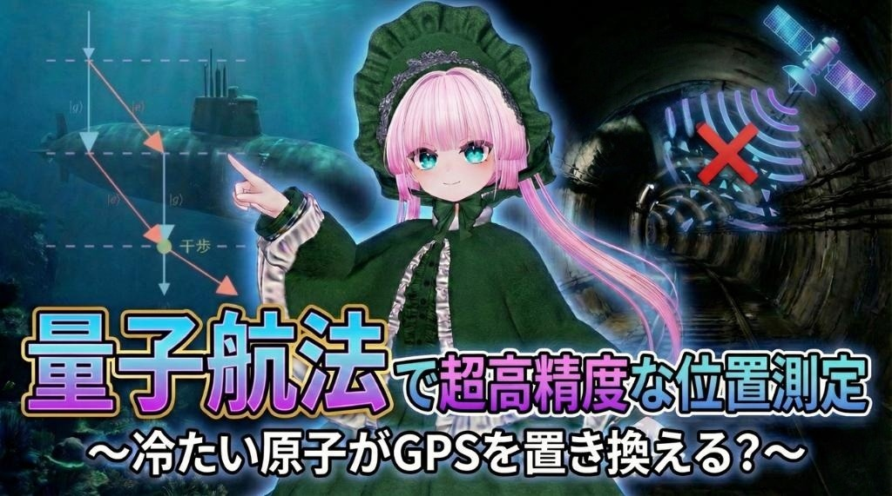

### TBA  --- ### 自己紹介 <div class="profile-container"> <div class="profile-left"> * さめ(мег-сск) * ⚛️ VRChat物理学集会の主催 * 🧑🎓 社会人学生として通信制大学在学中 * 得意分野: * 📸 コンピュータビジョン (画像認識/点群処理) * 🌍 空間情報処理 (地理情報/リモートセンシング) * ☁️ クラウドインフラ設計/IaC (AWS, GCP) * 学生時代は地球物理学を専攻 * 地球観測技術のエンジニアとして活動中 </div> <div class="profile-right"> </div> </div> --- ### 今日話すこと <div class="simple-box"> * TBA </div> <br> <div class="highlight-box"> ※ TBA </div> --- --- ### まとめ <div class="simple-box"> 1. TBA </div> --- ### LT登壇者の募集 <div class="simple-box"> * 物理学集会ではLT登壇者を募集しています！ * どんなジャンルでもOK！ * 興味のある方は物理学集会のDiscordサーバーまで！ </div>